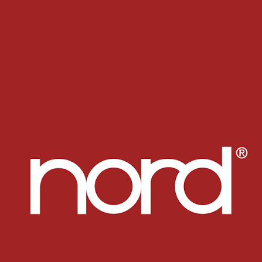
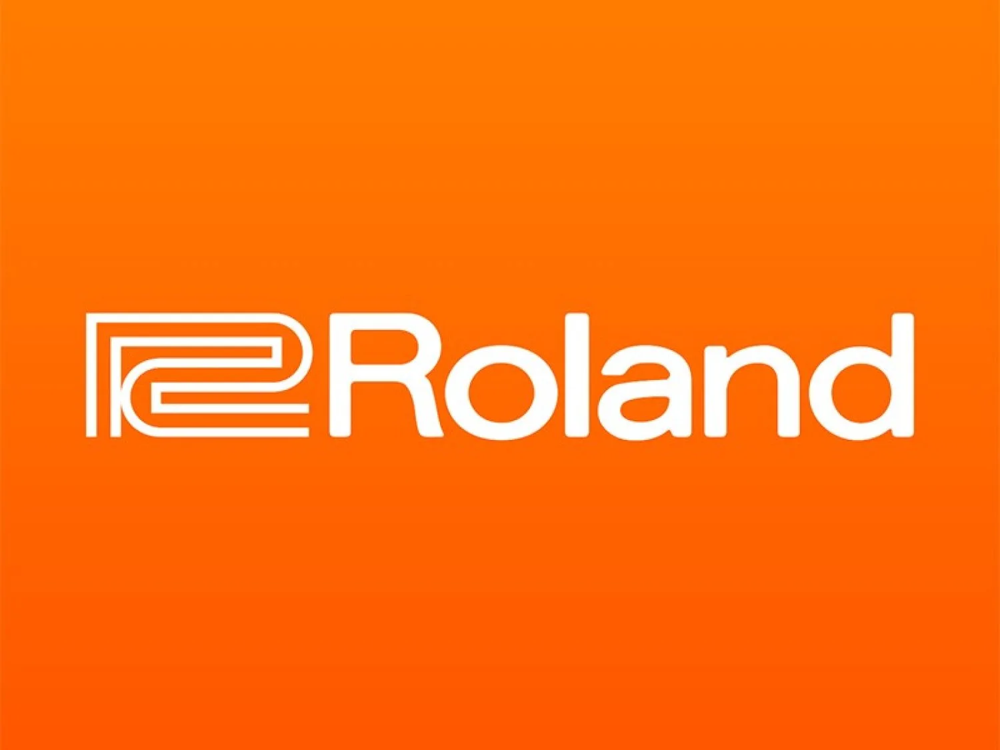
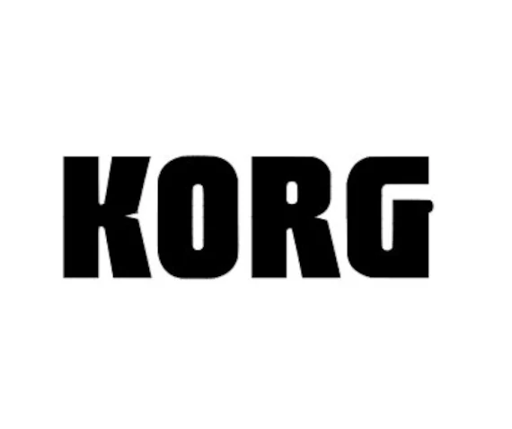
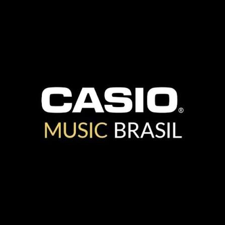

As Principais Marcas de Teclados Musicais do Mercado
Na hora de escolher um teclado musical, a marca do fabricante é um dos fatores mais importantes a se considerar. Cada empresa possui uma identidade própria, tecnologias exclusivas
de amostragem sonora e focos bem definidos de mercado — desde modelos voltados para iniciantes até instrumentos de nível de estúdio e grandes turnês.
Abaixo, apresentamos as quatro gigantes que dominam o mercado mundial de teclados e pianos digitais.
Nord Keyboards

Principais Características: Foco total na qualidade sonora orgânica, timbres de órgãos eletromecânicos lendários, biblioteca de pianos atualizável e uma interface "knob-per-function"
(onde quase cada parâmetro tem seu próprio botão físico no painel, permitindo ajustes instantâneos durante o show).
Linhas Famosas:
- Nord Stage: O carro-chefe da marca, combinando seções de Piano, Órgão e Sintetizador em um único instrumento de altíssima performance.
- Nord Piano: Focado puramente na melhor experiência de tocar piano com teclas contrapesadas e resposta dinâmica impecável.
- Nord Electro: Especializado em simulações perfeitas de órgãos (como o lendário Hammond B3) e pianos elétricos vintage (Rhodes e Wurlitzer).
- Nord Lead: Sintetizador analógico virtual focado em criação e manipulação sonora.
- Para quem é indicada: Tecladistas profissionais de turnê, músicos que tocam ao vivo e artistas que não abrem mão de qualidade sonora sem complicações de menus.
Veja um Review Detalhado do Carro-Chefe NordStage!
Roland

A Roland é uma lendária fabricante japonesa fundada em 1972, reconhecida mundialmente pela inovação tecnológica em sintetizadores, pianos digitais e módulos de som.
Principais Características: A marca destaca-se pelos seus potentes motores de síntese sonora, tecnologia avançada de simulação mecânica de teclas (como o sistema PHA-4) e pela alta durabilidade de construção dos seus instrumentos.
Linhas Famosas:
- XPS: Linha de sintetizadores imensamente popular no Brasil, perfeita para performances ao vivo (ex: XPS-10 e XPS-30). FP Series: Pianos digitais portáteis aclamados pe
- FP Series: Pianos digitais portáteis aclamados pela precisão do toque e timbres de piano de cauda.
- JUNO: Sintetizadores clássicos com interface intuitiva para edição rápida de som.
- Para quem é indicada: Tecladistas que tocam em bandas, produtores musicais e estudantes que buscam teclas com peso e dinâmica excelentes.
Fique com Review do Mais Novo Teclado da Linha XPS o XPS-10x!
Yamaha
Fundada no Japão em 1887, aYamaha é a maior fabricante de instrumentos musicais do planeta. Sua vasta experiência na construção de pianos acústicos de cauda reflete-se diretamente na qualidade de seus teclados digitais.
Principais Características: Timbres de piano acústico extremamente fiéis (amostrados do famoso piano de cauda Yamaha CFX), menus amigáveis e uma enorme versatilidade de modelos para todas as faixas de preço.
Linhas Famosas:
- PSR Series:
- P Series:
- Montage e MODX:
- Para quem é indicada: Desde o estudante que está comprando o primeiro instrumento até pianistas exigentes e arranjadores.
Review do Queridinho da Marca o MODX7!
Korg

A Korg é outra gigante japonesa focada no mercado profissional e na criação de sintetizadores e estações de trabalho (workstations) inovadoras desde 1963.
Principais Características: Timbres sintetizados encorpados, telas sensíveis ao toque (TouchView), sequenciadores avançados e excelente capacidade de customização de áudio.
Linhas Famosas:
- Pa Series: Arranjadores profissionais de alto padrão (como o Pa700 e Pa1000), muito utilizados na música popular e regional.
- Kross, Krome e Kronos: Workstations lendárias para produção musical completa e apresentações de grande porte.
- minilogue e microKORG: Sintetizadores analógicos e virtuais analógicos compactos para design de som (sound design).
- Para quem é indicada:Produtores de estúdio, compositores digitais e tecladistas profissionais que precisam de acompanhamentos avançados ou timbres eletrônicos modernos.
Review do Gigante Korg Kronos!
Casio

Principais Características: Instrumentos leves, modernos, com design compacto e excelente integração com aplicativos móveis via Bluetooth e USB.
Linhas Famosas:
- Casiotone (CT-S): Teclados portáteis com design moderno e alça para transporte, voltados para praticidade e estudo.
- Privia (PX Series): Pianos digitais elegantes, com teclas contrapesadas e design fino que se adapta a qualquer ambiente.
- Celtia / CT-X: Teclados arranjadores com o poderoso processador de som AiX, oferecendo timbres realistas por um preço acessível.
- Para quem é indicada: Iniciantes, estudantes com orçamento limitado e músicos que buscam um instrumento altamente portátil e moderno.